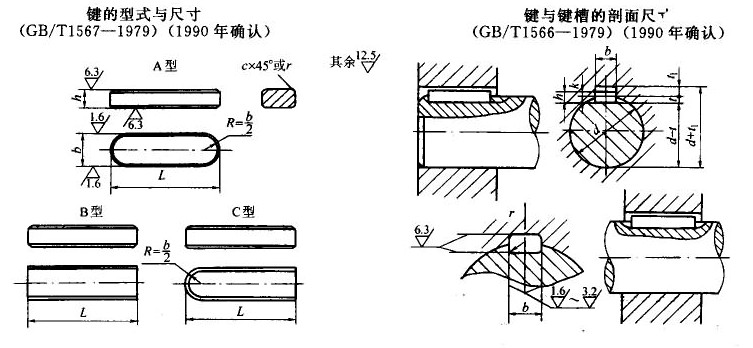

注：
1．表中每l00mm长的质量系指B型键。
2. 标记示例：圆头普通平键（A型），b=18mm,h=7mm,l=110mm
键 18×7×110 GB/T 1567-1979
对于同一尺寸的圆头普通平键（B型）或单圆头普通平键（C型）,标记为：
键B 18×7×110 GB/T 1567-1979
键C 18×7×110 GB/T 1567-1979
3. 本表的单位是mm。
薄型平键(摘自GB/T 1566-1979) |
||||||||||
轴径d |
键的公称尺寸 |
每100mm重量/kg |
键槽 |
|||||||
轴槽深t |
毂槽深t1 |
圆角半径r |
||||||||
b(h9) |
h(11) |
c或r |
L(h14) |
基本尺寸 |
公差 |
基本尺寸 |
公差 |
|||
自12～17 |
5 |
3 |
0.25～0.4 |
10～56 |
0.012 |
1.8 |
(+0.1,0) |
1.4 |
(+0.1,0) |
0.16～0.25 |
＞17～22 |
6 |
4 |
0.25～0.4 |
14～70 |
0.019 |
2.5 |
(+0.1,0) |
1.8 |
(+0.1,0) |
0.16～0.25 |
＞22～30 |
8 |
5 |
0.25～0.4 |
18～90 |
0.031 |
3 |
(+0.1,0) |
2.3 |
(+0.1,0) |
0.16～0.25 |
＞30～38 |
10 |
6 |
0.4～0.6 |
22～110 |
0.047 |
3.5 |
(+0.1,0) |
2.8 |
(+0.1,0) |
0.25～0.4 |
＞38～44 |
12 |
6 |
0.4～0.6 |
28～140 |
0.0565 |
3.5 |
(+0.1,0) |
2.8 |
(+0.1,0) |
0.25～0.4 |
＞44～50 |
14 |
6 |
0.4～0.6 |
36～160 |
0.066 |
3.5 |
(+0.1,0) |
2.8 |
(+0.1,0) |
0.25～0.4 |
＞50～58 |
16 |
7 |
0.4～0.6 |
45～180 |
0.088 |
4 |
(+0.2,0) |
3.3 |
(+0.2,0) |
0.25～0.4 |
＞58～65 |
18 |
7 |
0.4～0.6 |
50～200 |
0.099 |
4 |
(+0.2,0) |
3.3 |
(+0.2,0) |
0.25～0.4 |
＞65～75 |
20 |
8 |
0.6～0.8 |
56～220 |
0.126 |
5 |
(+0.2,0) |
3.3 |
(+0.2,0) |
0.4～0.6 |
＞75～85 |
22 |
9 |
0.6～0.8 |
63～250 |
0.155 |
5.5 |
(+0.2,0) |
3.8 |
(+0.2,0) |
0.4～0.6 |
＞85～95 |
25 |
9 |
0.6～0.8 |
70～280 |
0.177 |
5.5 |
(+0.2,0) |
3.8 |
(+0.2,0) |
0.4～0.6 |
＞95～110 |
28 |
10 |
0.6～0.8 |
80～320 |
0.22 |
6 |
(+0.2,0) |
4.3 |
(+0.2,0) |
0.4～0.6 |
＞110～130 |
32 |
11 |
0.6～0.8 |
90～360 |
0.276 |
7 |
(+0.2,0) |
4.4 |
(+0.2,0) |
0.4～0.6 |
＞130～150 |
36 |
12 |
1.0～1.2 |
100～400 |
0.339 |
7.5 |
(+0.2,0) |
4.9 |
(+0.2,0) |
0.7～1.0 |
L系列 |
l0,12,14,16,18,20,22,25,28,32,36,40,45,50,56,63,70,80,90,100,110,125,140,160,180,200,220,250,280,320,360,400 |
同左 |
同左 |
同左 |
同左 |
同左 |
同左 |
同左 |
同左 |
同左 |